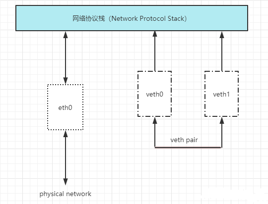
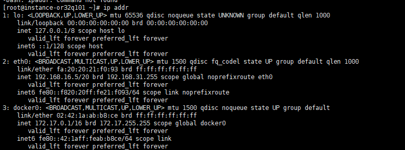
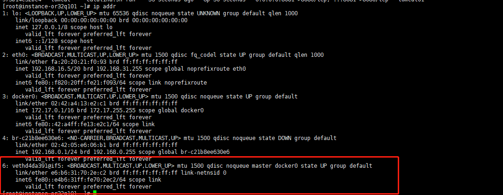
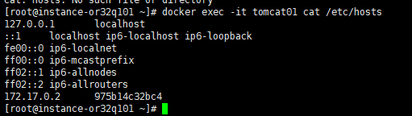
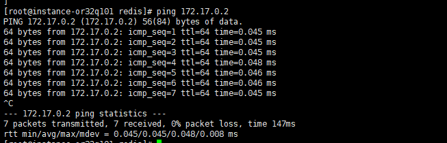
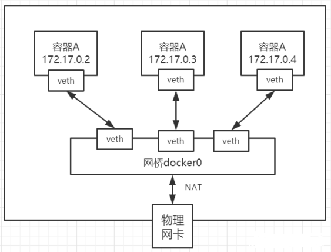
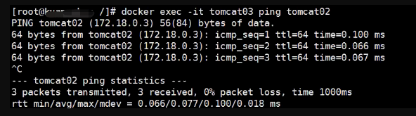
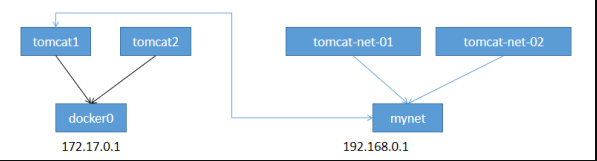
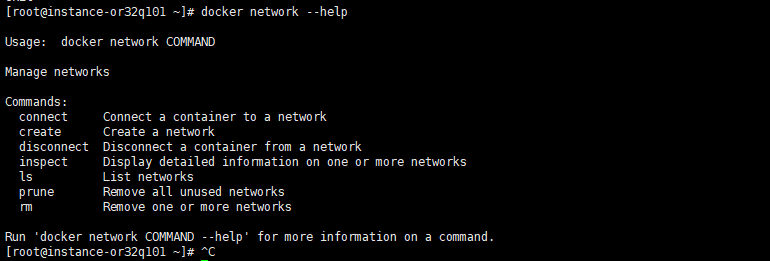

Docker 网络原理 容器是相对独立的环境，相当于一个小型的 Linux 系统，外界无法直接访问，那他是怎么做的呢，这里我们先了解下 Linux veth pair。
1. Linux veth pair veth pair 是成对出现的一种虚拟网络设备接口，一端连着网络协议栈，一端彼此相连。如下图所示：

veth pair将两个网络veth0和veth1连通。
2. 理解Docker0 我们先查看本地ip

这里我们分析可得，有三个网络：
1 2 3 lo 127.0.0.1 # 本机回环地址eth0 192.168.16.5 # 云服务器的私有IP（如果你是虚拟机就是虚拟机的ip） docker0 172.17.0.1 # docker网桥
lo和eth0在我们的虚拟机启动的时候就会创建，但是docker0在我们安装了docker的时候就会创建。docker0用来和虚拟机之间通信。
问题：Docker 是如何处理容器网络访问的？
我们先启动一个tomcat 容器来说明。
1 2 3 4 5 6 7 8 9 10 11 [root@instance-or32q101 ~]# docker ps -a CONTAINER ID IMAGE COMMAND CREATED STATUS PORTS NAMES [root@instance-or32q101 ~]# docker images REPOSITORY TAG IMAGE ID CREATED SIZE vhr latest f0f9f2026059 7 weeks ago 692MB redis 5.0 99ee9af2b6b1 5 months ago 110MB tomcat latest fb5657adc892 16 months ago 680MB mysql 8.0.15 7bb2586065cd 4 years ago 477MB java 8 d23bdf5b1b1b 6 years ago 643MB [root@instance-or32q101 ~]# docker run -d -p 8081:8080 --name tomcat01 tomcat 975b14c32bc4360b5e86c167a52dc4e7403ba0e91a8d2564f7439fe3661888cb
这里启动了tomcat，我们再来查看网络

发现：当启动了一个Redis容器之后，多了一组网卡6: veth77880b4@if5，而且还是成对的。同样我们再来启动一个tomcat02会又多出一对网卡。
进入了 tomcat01 容器内可以看到 tomcat01 对应的 ip 地址为：172.17.0.2

在宿主机上也可ping通。

说明：Redis对应的ip为172.17.0.3，也可以ping通。
结论：我们每启动一个容器，就会多出一对网卡，同时他们被连接到docker0上，而docker0又和虚拟机之间连通。
也可以通过inspect查看。
1 2 3 4 5 6 7 8 9 10 11 12 13 14 15 16 17 18 19 20 21 22 23 24 25 26 27 28 29 30 31 32 33 34 35 36 37 38 39 40 41 42 43 44 45 46 47 48 49 50 51 52 53 [root@instance-or32q101 ~]# docker network ls NETWORK ID NAME DRIVER SCOPE 86c046e34bef bridge bridge local # 这个就是docker0 77cd570b3ade host host local c21b8ee630e6 mynet bridge local 8b232ab59cec none null local [root@instance-or32q101 ~]# docker inspect 86c046e34bef [ { "Name": "bridge", "Id": "86c046e34bef73a3032f4690147934aff2ae314948676b0c5310640e13c640ff", "Created": "2023-04-21T01:31:36.929341733+08:00", "Scope": "local", "Driver": "bridge", "EnableIPv6": false, "IPAM": { "Driver": "default", "Options": null, "Config": [ { "Subnet": "172.17.0.0/16", "Gateway": "172.17.0.1" } ] }, "Internal": false, "Attachable": false, "Ingress": false, "ConfigFrom": { "Network": "" }, "ConfigOnly": false, "Containers": { "975b14c32bc4360b5e86c167a52dc4e7403ba0e91a8d2564f7439fe3661888cb": { "Name": "tomcat01", "EndpointID": "3407a81431308541dcd98e2ce99622938e2d8f8834b902a47df0f07c40048593", "MacAddress": "02:42:ac:11:00:02", "IPv4Address": "172.17.0.2/16", "IPv6Address": "" } }, "Options": { "com.docker.network.bridge.default_bridge": "true", "com.docker.network.bridge.enable_icc": "true", "com.docker.network.bridge.enable_ip_masquerade": "true", "com.docker.network.bridge.host_binding_ipv4": "0.0.0.0", "com.docker.network.bridge.name": "docker0", "com.docker.network.driver.mtu": "1500" }, "Labels": {} } ]
我们可以抽象为这样一个网络模型。

在这里，我们可以看到Docker0相当于一个路由器的作用，任何一个容器启动默认都是docker0网络。
docker默认会给容器分配一个可用ip，并把它同docke0相连。使用到的就是veth pair技术。
3. 容器互联–Link 前面我们启动的两个 tomcat 对应的 hosts 如下：
1 2 3 4 5 6 7 8 [root@instance-or32q101 ~]# docker exec -it tomcat01 cat /etc/hosts 127.0.0.1 localhost ::1 localhost ip6-localhost ip6-loopback fe00::0 ip6-localnet ff00::0 ip6-mcastprefix ff02::1 ip6-allnodes ff02::2 ip6-allrouters 172.17.0.2 975b14c32bc4
1 2 3 4 5 6 7 8 [root@instance-or32q101 ~]# docker exec -it tomcat02 cat /etc/hosts 127.0.0.1 localhost ::1 localhost ip6-localhost ip6-loopback fe00::0 ip6-localnet ff00::0 ip6-mcastprefix ff02::1 ip6-allnodes ff02::2 ip6-allrouters 172.17.0.3 f58d4aab065d
发现：他们的 hosts 中只有各自的ip地址。
但是在实际的工作中，容器使用的是虚拟ip，每次启动ip都会变化，思考一个场景，我们编写一个微服务，数据库连接地址原来是使用ip的，如果ip变化就不行了，那我们能不能使用服务名访问呢？
我们在启动一个tomcat03，使用—link绑定到tomcat02上。然后看它的hosts是什么样的。
1 2 3 4 5 6 7 8 9 10 11 [root@instance-or32q101 ~]# docker run -d -p 8083:8080 --name tomcat03 --link tomcat02 tomcat 75aa934a2757a7e028b975f95da8d7ea040feba04e75bf34273c18ab0924554e [root@instance-or32q101 ~]# docker exec -it tomcat03 cat /etc/hosts 127.0.0.1 localhost ::1 localhost ip6-localhost ip6-loopback fe00::0 ip6-localnet ff00::0 ip6-mcastprefix ff02::1 ip6-allnodes ff02::2 ip6-allrouters 172.17.0.3 tomcat02 f58d4aab065d 172.17.0.4 75aa934a2757
发现：使用了–link，不但有了自己的ip，而且还有了tomcat02的服务名。但是tomcat02中并没有tomcat03的，因为–link是单向的。

这样就实现了容器和容器之间的连通。不需要通过ip地址连通，而是通过服务名就可以。
但是使用—link的方法过时了，我们一般使用自定义网络。
4.自定义网络（推荐） docker0的特点：
它是默认的
域名访问不通
–link 域名通了，但是删了又不行
docker为我们提供了三种网络模式
1 2 3 4 5 6 [root@instance-or32q101 ~]# docker network ls NETWORK ID NAME DRIVER SCOPE a8c09e107847 bridge bridge local 77cd570b3ade host host local 8b232ab59cec none null local
这其中默认使用的是 bridge，也就是我们的docker0网卡。
网络模式
配置
说明
bridge模式
–net=bridge
默认值，在Docker网桥docker0上为容器创建新的网络栈
none模式
–net=none
不配置网络，用户可以稍后进入容器，自行配置
container模式
–net=container:name/id
容器和另一个容器共享Network namespace
host模式
–net=host
容器和宿主机共享Network namespace
用户自定义
–net=自定义网络
用户自己使用network相关命令定义网络，创建容器的时候可以指定为自定义的网络
在我们启动容器的时候，实际上是如下命令
1 docker run -d -P --name tomcat01 --net bridge tomcat
这个—net是默认的，所以被省略了。
下面我们自定义一个网络 mynet。
1 2 3 4 5 6 7 8 9 10 11 12 13 14 15 16 17 18 19 20 21 22 23 24 25 26 27 28 29 30 31 32 33 34 35 36 37 38 39 40 [root@instance-or32q101 ~]# docker network create --driver bridge --subnet 192.168.0.0/16 --gateway 192.168.0.1 mynet 963b594c07add27410d690fd388a4ed2a0fb196c0bcae08f0a30415e2d8ce131 [root@instance-or32q101 ~]# docker network ls NETWORK ID NAME DRIVER SCOPE a8c09e107847 bridge bridge local 77cd570b3ade host host local 963b594c07ad mynet bridge local #自定义网络 8b232ab59cec none null local [root@instance-or32q101 ~]# docker network inspect mynet [ { "Name": "mynet", "Id": "963b594c07add27410d690fd388a4ed2a0fb196c0bcae08f0a30415e2d8ce131", "Created": "2023-04-25T15:08:11.109587587+08:00", "Scope": "local", "Driver": "bridge", "EnableIPv6": false, "IPAM": { "Driver": "default", "Options": {}, "Config": [ { "Subnet": "192.168.0.0/16", "Gateway": "192.168.0.1" } ] }, "Internal": false, "Attachable": false, "Ingress": false, "ConfigFrom": { "Network": "" }, "ConfigOnly": false, "Containers": {}, "Options": {}, "Labels": {} } ]
下面我们使用自定义的网络启动 tomcat
1 2 3 4 5 6 7 8 [root@instance-or32q101 ~]# docker run -d -p 8081:8080 --name tomcat-net-01 --net mynet tomcat a4de0cb908e147bfbc7d55660387e93bc5bda7e8cd59e54bcfb075f22b04581b [root@instance-or32q101 ~]# docker run -d -p 8085:8080 --name tomcat-net-02 --net mynet tomcat 19bce82bdc4bf61532a9c02b304924fe3687f37f7ceb75c8c72bbd94ab70c2df [root@instance-or32q101 ~]# docker ps -a CONTAINER ID IMAGE COMMAND CREATED STATUS PORTS NAMES 19bce82bdc4b tomcat "catalina.sh run" 17 seconds ago Up 14 seconds 0.0.0.0:8085->8080/tcp, :::8085->8080/tcp tomcat-net-02 a4de0cb908e1 tomcat "catalina.sh run" 2 minutes ago Up About a minute 0.0.0.0:8081->8080/tcp, :::8081->8080/tcp tomcat-net-01
查看网络
1 2 3 4 5 6 7 8 9 10 11 12 13 14 15 16 17 18 19 20 21 22 23 24 25 26 27 28 29 30 31 32 33 34 35 36 37 38 39 40 41 42 43 44 45 46 [root@instance-or32q101 ~]# docker inspect mynet [ { "Name": "mynet", "Id": "963b594c07add27410d690fd388a4ed2a0fb196c0bcae08f0a30415e2d8ce131", "Created": "2023-04-25T15:08:11.109587587+08:00", "Scope": "local", "Driver": "bridge", "EnableIPv6": false, "IPAM": { "Driver": "default", "Options": {}, "Config": [ { "Subnet": "192.168.0.0/16", "Gateway": "192.168.0.1" } ] }, "Internal": false, "Attachable": false, "Ingress": false, "ConfigFrom": { "Network": "" }, "ConfigOnly": false, "Containers": { "19bce82bdc4bf61532a9c02b304924fe3687f37f7ceb75c8c72bbd94ab70c2df": { "Name": "tomcat-net-02", "EndpointID": "18d57a71e0348d10c53d057aa7cdaa94a220a3d958650a7024e5186828f2bd05", "MacAddress": "02:42:c0:a8:00:03", "IPv4Address": "192.168.0.3/16", "IPv6Address": "" }, "a4de0cb908e147bfbc7d55660387e93bc5bda7e8cd59e54bcfb075f22b04581b": { "Name": "tomcat-net-01", "EndpointID": "fcd3c0859ea65a8b4a41f627fda9142f58bb453fa6a728ca2295fd2da588135d", "MacAddress": "02:42:c0:a8:00:02", "IPv4Address": "192.168.0.2/16", "IPv6Address": "" } }, "Options": {}, "Labels": {} } ]
我们来测试ping容器名和ip试试，都可以ping通
1 2 3 4 5 6 7 [root@instance-or32q101 ~]# docker exec -it tomcat-net-01 ping 192.168.0.3 PING 192.168.0.3 (192.168.0.3) 56(84) bytes of data. 64 bytes from 192.168.0.3: icmp_seq=1 ttl=64 time=0.093 ms [root@instance-or32q101 ~]# docker exec -it tomcat-net-01 ping tomcat-net-02 PING tomcat-net-02 (192.168.0.3) 56(84) bytes of data. 64 bytes from tomcat-net-02.mynet (192.168.0.3): icmp_seq=1 ttl=64 time=0.063 ms 64 bytes from tomcat-net-02.mynet (192.168.0.3): icmp_seq=2 ttl=64 time=0.066 ms
发现：不用—link也可以直接通过服务名ping通了。
5.网络连通 docker0和自定义网络肯定不通，我们使用自定义网络的好处就是网络隔离。
但是在实际的工作中，比如我们部署了mysql使用了一个网段。部署了tomcat使用了另一个网段，两个网段之间肯定是不能相互连通的，但是tomcat和mysql又需要相互连通，我们就要使用网络连通。原理图如下：


网络连通就是将一个容器和一个网段之间的连通。
比如我前面使用的默认docker0的tomcat01，需要连接到mynet网络。
1 2 3 4 5 6 7 8 9 10 11 12 13 14 15 16 17 18 19 20 21 22 23 24 25 26 27 28 29 30 31 32 33 34 35 36 37 38 39 40 41 42 43 44 45 46 47 48 49 50 51 52 53 54 [root@instance-or32q101 ~]# docker network connect mynet tomcat01 [root@instance-or32q101 ~]# docker network inspect mynet [ { "Name": "mynet", "Id": "3136d64109c6f285bc69d3ee4be901524292d0e5ddd9e414d49197dfa6c19ba1", "Created": "2022-02-27T14:15:44.676693958+08:00", "Scope": "local", "Driver": "bridge", "EnableIPv6": false, "IPAM": { "Driver": "default", "Options": {}, "Config": [ { "Subnet": "192.168.0.0/16", "Gateway": "192.168.0.1" } ] }, "Internal": false, "Attachable": false, "Ingress": false, "ConfigFrom": { "Network": "" }, "ConfigOnly": false, "Containers": { "2e709013935463c29caf28771bb49925fee4e02842459b339d7dd1ad5dedf9b7": { "Name": "tomcat-net-01", "EndpointID": "9f3a46bad37ade7935e283715caa5699e9a7e22175b592f4a4792a37c351d969", "MacAddress": "02:42:c0:a8:00:02", "IPv4Address": "192.168.0.2/16", "IPv6Address": "" }, "5c0c544f2507d9f5f456feceddbd853ebccc07cea8c39c8479693731e480bf55": { "Name": "tomcat01", "EndpointID": "d05abb2d31af4067c5a45f299ce7b4401b1fa81638a44b6c09f3de7f8f4221fe", "MacAddress": "02:42:c0:a8:00:04", "IPv4Address": "192.168.0.4/16", "IPv6Address": "" }, "d6066db5fdd0b508514107a896ed20b639eaa47dbd97a025ad0c52250766c8a4": { "Name": "tomcat-net-02", "EndpointID": "3a5f6f2a07d900303382b290825c9f52640689c859608c741c7c7d81031e107e", "MacAddress": "02:42:c0:a8:00:03", "IPv4Address": "192.168.0.3/16", "IPv6Address": "" } }, "Options": {}, "Labels": {} } ]
通过这种方式直接将tomcat01加到了mynet网络中。
6.总结
veth pair是成对出现的一种虚拟网络设备接口，一端连着网络协议栈，一端彼此相连。
docker中默认使用docker0网络。
docker0相当于一个路由器的作用，任何一个容器启动默认都是docker0网络。
docker0是容器和虚拟机之间通信的桥梁。
推荐使用自定义网络，更好实现使用服务名的连通方式，避免ip改变的尴尬。
网络之间不能直接连通，网络连通是将一个容器和一个网络之间的连通，实现跨网络操作。